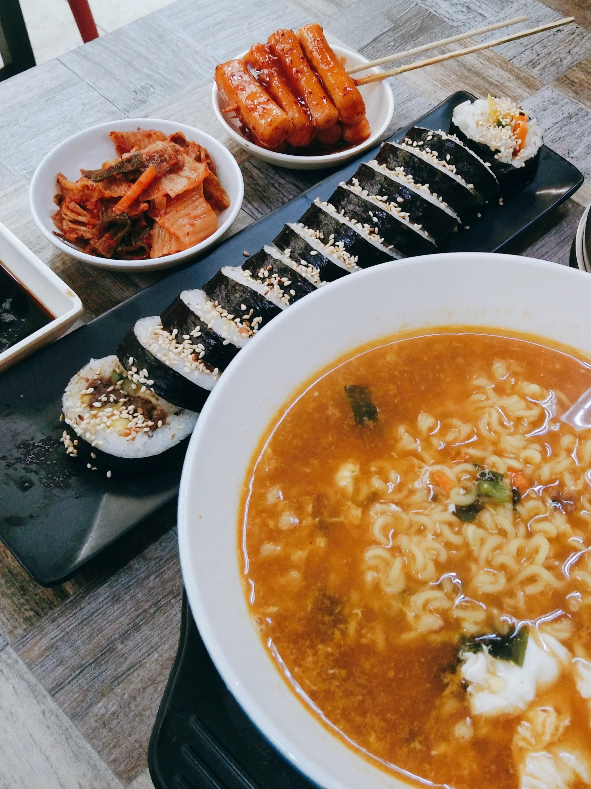
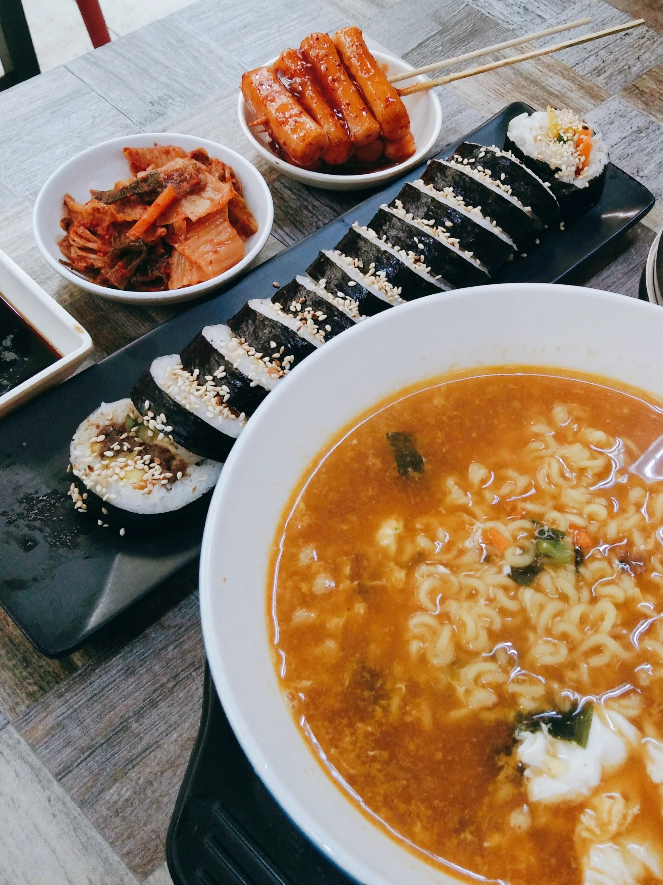
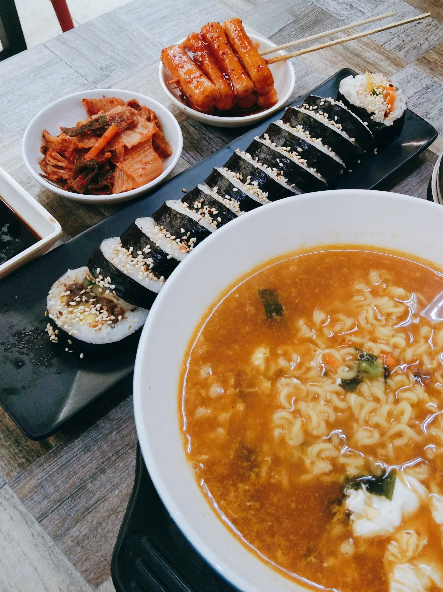

"Hometown Cuisine food is not only flavorful but also joy to the eyes."
- Samuel Wahng
Richard grew on Korean and Indonesia food as he spend his childhood abroad in Asia. Pursuing higher education in the United States, he found out that others thought that food from Asia is delicious. He began cooking for his friends each week. Soon, the fame of his food spread across his university, and he decided to start a restaurant. That restaurant is Hometown Cuisine.
